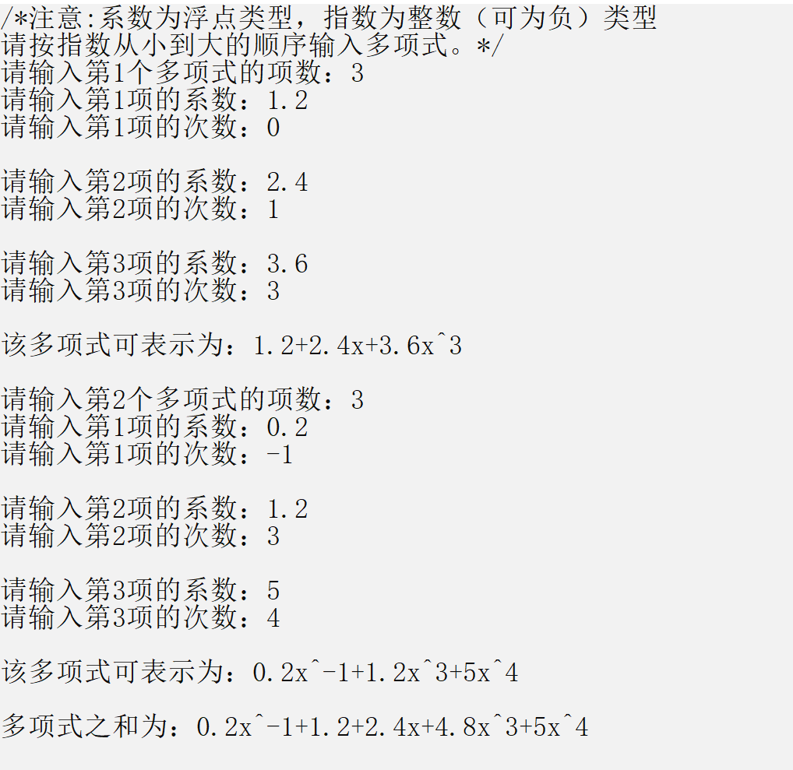

这次我们话不多说，直接上代码，看代码注释即可
#include<iostream>
#include<cstdio>
#include<cstring>
#include<cstdlib>
#include<cmath>
using namespace std;
typedef struct Zlnb{
double x; //系数
int y; //指数
struct Zlnb *next; //指针域
}Zl;//节点名称
void PrintPoly(Zl *s)//打印单个项
{
if(s->y==0)//指数等于零时，直接输出系数
{
cout<<s->x;
}
else if(s->x==1)//系数为1时，1省略
{
if(s->y==1)//指数为1时省略不写
cout<<"x";
else
cout<<"x^"<<s->y;
}
else if(s->x==-1)//系数为1时，-1省略
{
if(s->y==1)//指数为1时省略不写
cout<<"-x";
else
cout<<"-x^"<<s->y;
}
else
{
if(s->y==1)//指数为1时省略不写
cout<<s->x<<"x";
else
cout<<s->x<<"x^"<<s->y;
}
}
void PrintPolyn(Zl *first)//利用PrintPoly打印整个多项式
{
Zl *temp=first->next;//表头没有数据，表头的下一个才是多项式的第一个项
while(temp->next!=NULL)//遍历，从第一个打印到倒数第二个
{
PrintPoly(temp);
temp=temp->next;
if(temp->x>0)
cout<<"+";//只有一个项时此循环不执行，所以直接打印加号即可
}
PrintPoly(temp);//打印最后一个
cout<<endl;
}
void ListInsert(Zl *first,Zl *s)//插入，将s节点插入到最后
{
Zl *temp=first;
while(temp->next!=NULL)//循环找到最后一个节点
temp=temp->next;
temp->next=s;//插入s
s->next=NULL;
}
Zl* InputData(int k)//输入函数，采用先输入系数后输入次数的方法，k代表是第几个多项式
{
Zl *first=new Zl;//创建多项式链表的头指针
first->next=NULL;//头指针初始化
int a;
int com[100];
printf("请输入第%d个多项式的项数：",k);
cin>>a;//接受多项式的项数
if(a<=0)//确保项数大于0
{
cout<<"系数输入错误，请关闭程序重新输入"<<endl;
return 0;
}
for(int i=1;i<=a;i++)//循环接收多项式的每个项
{
Zl *p=new Zl;//用p存下即将读取的数据
p->next=NULL;
double m;
int n;
printf("请输入第%d项的系数：",i);
cin>>m;
if(!m)//系数不能等于0
{
cout<<"系数输入错误，请关闭程序重新输入"<<endl;
return 0;
}
printf("请输入第%d项的次数：",i);
cin>>n;
com[i]=n;
for(int j=1;j<i;j++)//循环遍历是否有重复项出现
if(n==com[j])
{
cout<<"次数输入重复，请关闭程序重新输入"<<endl;
return 0;
}
p->x=m;//赋值
p->y=n;
ListInsert(first,p);//将p插入多项式中
cout<<endl;
}
printf("该多项式可表示为：");
PrintPolyn(first);//打印多项式
cout<<endl;
return first;//返回多项式的首地址
}
Zl* AddPolyn(Zl *a,Zl*b)//两个多项式相加的函数
{
Zl *first=new Zl;//创建一个新的链表来存两多项式相加得到的结果
first->next=NULL;
Zl *m=a->next;//注意，这里表头没有存放数据，表头的下一个才存放的是多项式第一个项
Zl *n=b->next;
while(m!=NULL&&n!=NULL)//有一个表空了就跳出循环
{
Zl *temp=new Zl;//和上面的p一样，暂存得到的数据
temp->next=NULL;
int num=m->y-n->y;//判断指数的大小
if(num<0)//m的指数小于n
{
temp->x=m->x;
temp->y=m->y;
ListInsert(first,temp);//因为m指数小于n，将m的当前项复制过来插入结果链表
m=m->next;//指针后移
}
else if(num>0)//m的指数大于n
{
temp->x=n->x;
temp->y=n->y;
ListInsert(first,temp);//因为m指数大于n，将n的当前项复制过来插入结果链表
n=n->next;//指针后移
}
else//m的指数等于n
{//
double ans=m->x+n->x;
if(ans!=0){//系数和不等于0时系数相加作为新的系数插入结果链表中
temp->x=ans;
temp->y=m->y;
ListInsert(first,temp);
}//系数和不等于零时直接指针后移即可，由于两种情况都会后移，所以可以合并
m=m->next;
n=n->next;
}
}
Zl *templist=new Zl;//创建一个临时链表来将存放可能的剩下的项
templist->next=NULL;
if(m!=NULL)//当m链表还有剩余项时
{
Zl *p=m;
while(p!=NULL)//循环遍历剩下的项
{
Zl *temp=new Zl;
temp->x=p->x;
temp->y=p->y;
temp->next=NULL;//用temp暂存当前项
ListInsert(templist,temp);//插入temp
p=p->next;
}
Zl *temp=first;
while(temp->next!=NULL)//循环找到结果链表的最后一项
temp=temp->next;
temp->next=templist->next;//直接将临时链表接在结果链表后面即可
}
if(n!=NULL)//当n链表还有剩余项时，步骤与上面的情况一样
{
Zl *p=n;
while(p!=NULL)
{
Zl *temp=new Zl;
temp->x=p->x;
temp->y=p->y;
temp->next=NULL;
ListInsert(templist,temp);
p=p->next;
}
Zl *temp=first;
while(temp->next!=NULL)
temp=temp->next;
temp->next=templist->next;
}
return first;//返回结果链表的头指针
}
void FreePolyn(Zl *s)//释空间
{
Zl *p=s;
while(s!=NULL)//遍历链表一个一个释放空间
{
s=s->next;
free(p);
p=s;
}
}
int main()
{
cout<<"/*注意:系数为浮点类型，指数为整数（可为负）类型"<<endl;
cout<<"请按指数从小到大的顺序输入多项式。*/"<<endl;
Zl *a;//用来存放多项式1
Zl *b;//用来存放多项式2
Zl *c;//用来存放结果多项式
a=InputData(1);//输入多项式1
b=InputData(2);//输入多项式2
c=AddPolyn(a,b);//相加
cout<<"多项式之和为：";
PrintPolyn(c);//打印结果
FreePolyn(a);//依次释放链表空间
FreePolyn(b);
FreePolyn(c);
return 0;
}
运行测试和结果：

我的个人博客 amazingz6.github.io
我的bilibili https://space.bilibili.com/66908429
我的CSDN https://blog.csdn.net/qq_44105654
我的简书 https://www.jianshu.com/u/607ef08e5825
我的github https://github.com/AmazingZ6?tab=repositories